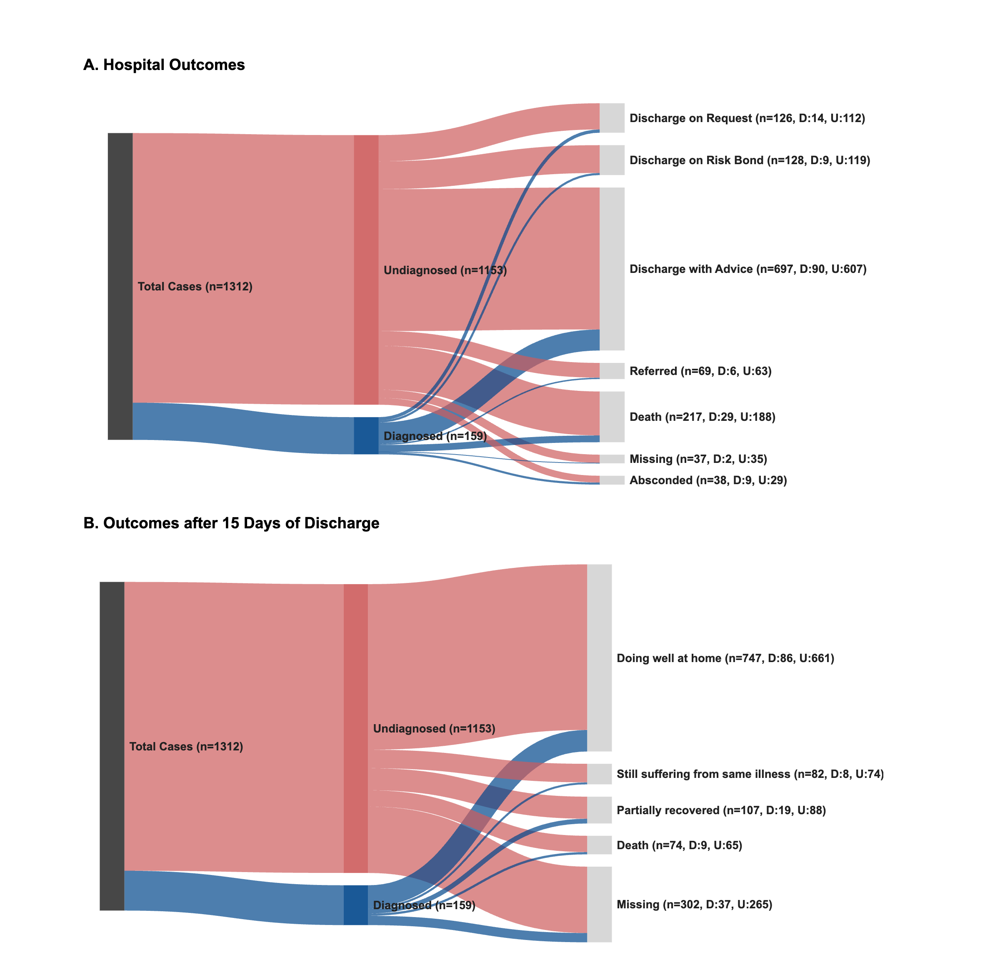
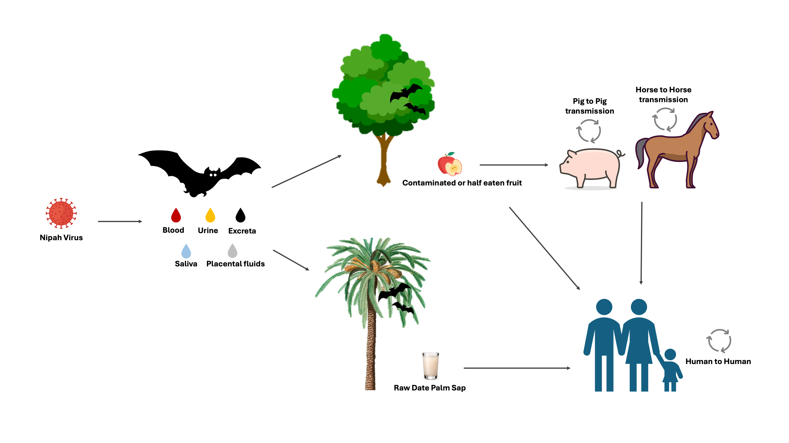

Medical Graduate·Virologist·Biotechnologist·Public Health Researcher
Advancing infectious disease research through molecular diagnostics and public health.
I am a medical professional combining expertise in virology, biotechnology, and public health to
drive infectious disease surveillance and molecular diagnostics. Leveraging my clinical background
and extensive laboratory experience, I aim to advance innovative biomedical research and implement
evidence-based public health interventions through advanced genomic analysis and multidisciplinary
collaboration.
My training bridges the clinic and the bench. I earned my MBBS
from Sylhet MAG Osmani Medical College, followed by a Doctor of Medicine (MD)
in Virology from Bangabandhu Sheikh Mujib Medical University and a
MS in Biotechnology (passed with distinction) from North South University.
I currently serve as a Laboratory Research Officer at IEDCR,
characterizing the epidemiological diversity of Nipah virus strains in a BSL-2+ setting using PCR, ELISA,
serology, and sequencing. Previously I led a medical college microbiology department and supervised
diagnostic testing for hepatitis, HIV, HBV, HCV, CMV, and HPV during my residency.
I am now pursuing a Master of Public Health, extending my
molecular work into epidemiology, biostatistics, and evidence-based communication — with a continuing
focus on turning laboratory and surveillance data into actionable public health insight.
Education
Academic background
Four degrees spanning medicine, molecular biotechnology, virology, and public health — listed most recent first.
Master of Public Health (MPH)
Jan 2026 — Ongoing
North South University · Dhaka, Bangladesh
CGPA 4.00 / 4.00 (2nd semester).
Foundations in Epidemiology, Foundations in Biostatistics, Environmental Health, Public Health Information, Education & Communication.
Doctor of Medicine (MD) in Virology
Mar 2019 — Mar 2023
Bangabandhu Sheikh Mujib Medical University · Dhaka
80% in thesis (overall 75.62%).
Thesis: Single nucleotide polymorphisms of VDR ApaI, PNPLA3 I148M, TLR4 D299G in hepatocellular carcinoma patients of Bangladesh.
General & Molecular Virology, Applied & Diagnostic Virology, Medical Immunology, Clinical Pathology, Systemic & Clinical Virology, Bacteriology, Parasitology, Mycology, Biostatistics, Research Methodology.
My work spans emerging viral threats, molecular diagnostics, and
computational biology — connecting bench science with genomic analysis and public health
surveillance across the following themes.
Emerging & zoonotic viruses
Surveillance and characterization of high-consequence pathogens — Nipah, Mpox, and Rift Valley fever virus.
Molecular diagnostics
Nucleic-acid detection by PCR, qPCR, RT-qPCR, and isothermal amplification (RT-LAMP) on whole blood and dried blood spots.
Viral hepatitis & HCC
Hepatitis A/E and B/C/HIV serology and the genetics of hepatocellular carcinoma — VDR, PNPLA3, and TLR4 polymorphisms.
Genomics & bioinformatics
De novo genome assembly and variant calling for SARS-CoV-2, phylogenetics, and RNA-seq analysis pipelines.
Linking climate variability to infectious-disease burden, including hepatitis A and E transmission in Dhaka.
Nipah virus epidemiology in Bangladesh
At IEDCR I help characterize the epidemiological diversity of circulating Nipah strains. The virus causes
seasonal, high-fatality encephalitis outbreaks concentrated in the country's central and north-western
"Nipah belt," with recurrent spillover linked to the winter date-palm sap season. Transmission is driven by
consumption of raw date-palm sap contaminated by fruit-bat (Pteropus) excreta, followed by
person-to-person spread through close contact and healthcare exposure. Prevention therefore centres on
avoiding raw sap, heating or boiling sap before consumption, protecting collection vessels from bat access,
and rigorous infection-prevention and contact precautions in care settings.
Six published articles plus preprints and manuscripts in preparation, listed most recent first.
Click any linked article to open it.
ORCID 0000-0003-4783-8735.
Single nucleotide polymorphisms of VDR ApaI, PNPLA3 I148M, TLR4 D299G in hepatocellular carcinoma patients of Bangladesh
Maruf Ahmed Bhuiyan, Saif Ullah Munshi.
MD thesis · awaiting publication · Mar 2023
Discovery of potential compounds against Nipah virus: a molecular docking and dynamics simulation approach
Maruf Ahmed Bhuiyan, Nawshin Atia Keya, Farha Susan Mou, Raihan Rahman Imon, Rahat Alam, Abdus Samad, Foysal Ahammad.
Pre-print · awaiting journal submission · Jan 2022
Technical Portfolio
Computation, scripting, genomics & visualisation
Bench work backed by reproducible code — shell pipelines for sequence analysis, R for statistics,
QGIS for geospatial epidemiology, genome sequencing deposited to public databases, and custom
visual analytics for outbreak data.
QGIS spatial map
Add an image named qgis-map.svg (or .png/.jpg) in the same folder as this page and it will load here automatically.
Add timeline_bubble_plot.png to this folder to load.
Outbreak timeline (bubble plot)R / ggplot2

Sankey diagram
Add sankey_diagram.png to this folder to load.
Flow & transmission (Sankey)R

Transmission pathway
Add nipah_virus_transmission_pathway.png to this folder to load.
Nipah virus transmission pathwayIllustrator
Genome sequencing contributions
I have contributed viral genome sequences from Bangladesh to Pathoplexus,
an open, community-governed database for pathogen genomic data — supporting genomic surveillance and
outbreak response for two priority pathogens.
IEDCR, Mohakhali, Dhaka — "Characterizing the epidemiological diversity of Nipah strains"
Routine molecular detection and serology (PCR, ELISA, sequencing) in a BSL-2+ laboratory per SOP; contribute to reports and scientific manuscripts and run training/workshops; organize the lab, develop SOPs, supervise technologists, and maintain biosafety and biosecurity.
3 Jul 2024 — 30 Apr 2025
Head of the Department, Microbiology
Shahabuddin Medical College, Dhaka
Developed and updated the academic curriculum, mentored students, supervised diagnostic testing related to infectious diseases and reporting, and conducted examinations and academic assessments.
2 May 2023 — 30 Apr 2025
Assistant Professor, Microbiology
Shahabuddin Medical College, Dhaka
Delivered lectures and practical training in bacteriology, virology, and immunology, teaching and supervising undergraduate medical students.
Mar 2019 — Jan 2023
Resident (MD, Virology)
Department of Virology, BSMMU, Dhaka
Supervised hepatitis and HIV serological panels and molecular testing for HBV, HCV, HIV, CMV, and HPV among other viral diseases; performed result analysis and reporting.
Feb 2017 — Sep 2018
Medical Officer, NICU
Padma General Hospital, Dhaka
Monitored and treated neonates, counselled parents on their newborn's status, and led a six-member care team of nurses and medical technologists.
Oct 2015 — Oct 2016
Intern Doctor
Sylhet MAG Osmani Medical College, Sylhet
Attended outdoor and emergency patients, admitted patients per standard protocol, and performed procedures including urinary/IV catheter and nasogastric tube insertion, blood transfusion, and wound dressing.
Training, Workshops & Internships
Continuing professional development
Eleven programmes across public health, bioinformatics, molecular biology, and computational drug design — most recent first.
Writing for Public Health Bulletins
9 Mar – 3 Apr 2026
CDC Foundation · Virtual
Synthesizing epidemiological data into actionable insight; translating findings into clear, evidence-based narratives; structuring surveillance articles and formal bulletins for policy influence.
Climate Change and Public Health
Jan – Apr 2026
University of Dhaka · Dhaka
Climate-sensitive diseases and climate-resilient health systems; climate-health surveillance, health impact assessment, adaptation planning, proposal development, and policy analysis.